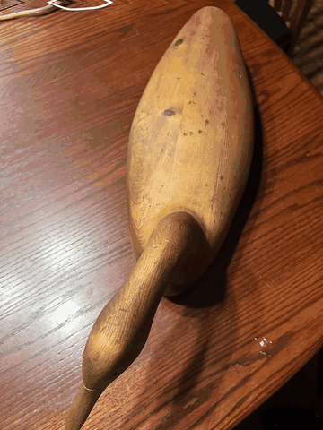

Project 0
Becoming Friends with Your Camera
Exploring how camera position and focal length change perspective, apparent depth, and the relationship between a subject and its background.
Selfie: The Wrong Way vs. The Right Way
A close-up portrait exaggerates depth because the camera is very near the face. Stepping back and zooming in keeps the face similarly sized in the frame while producing a more natural-looking perspective.
Architectural Perspective Compression
Changing camera position while compensating with zoom changes the relative apparent sizes of objects at different depths. From farther away, the scene appears more compressed; from closer up, depth is more exaggerated.
The Dolly Zoom
I moved the camera backward while zooming in so the wooden bird stayed approximately the same size in frame. The subject remains relatively stable while the perspective of the table and background changes, creating the classic dolly-zoom effect.
